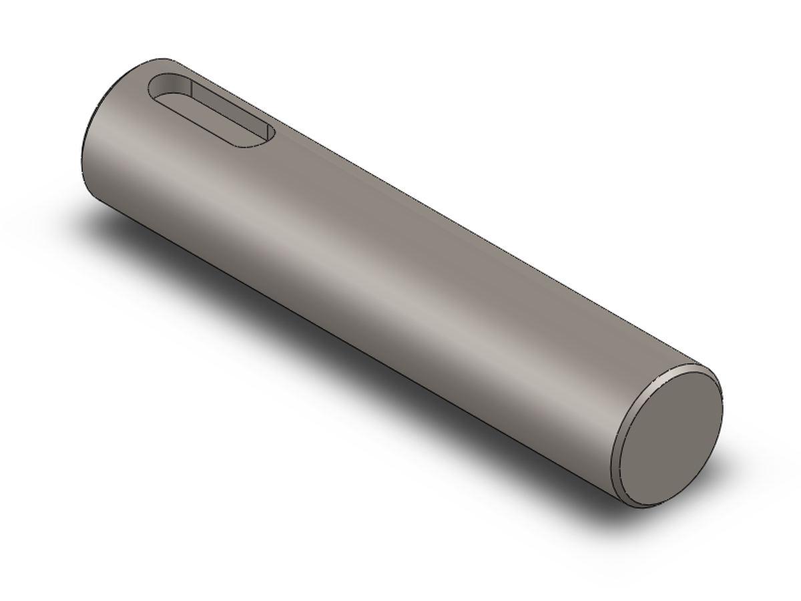
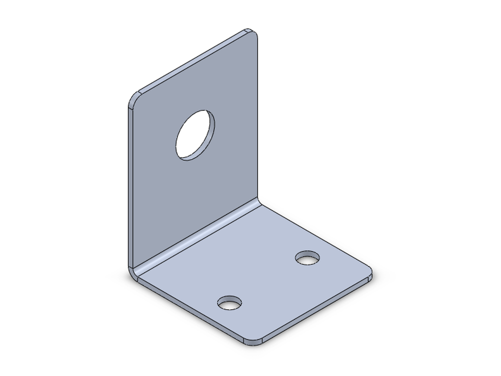
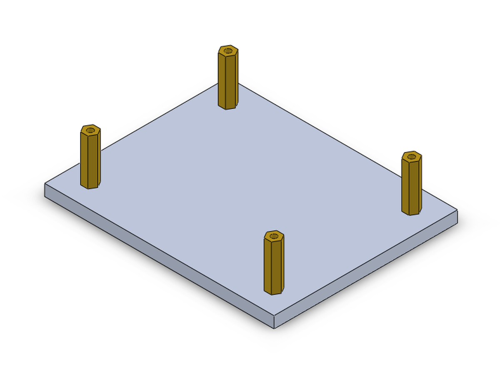
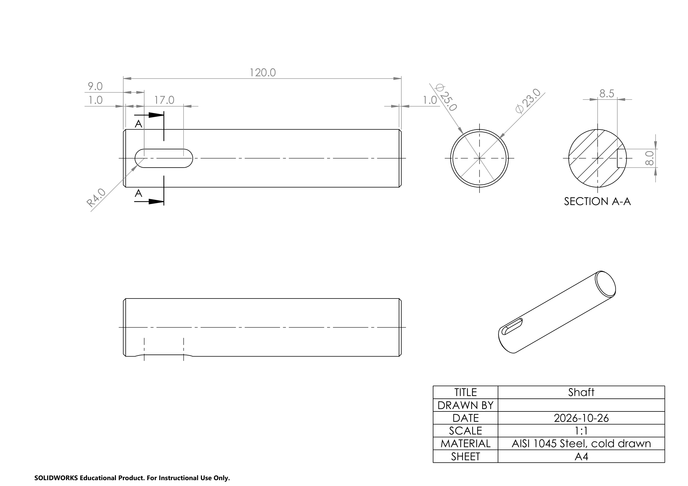
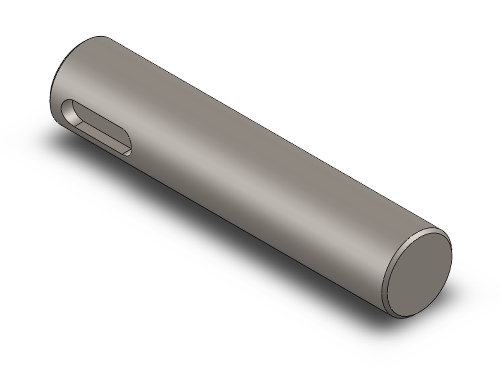

A part
Youmake me a plate for a nema 17 motor
Claude Code (Claude Opus)Before I build it, here's a plan with
suggested sizes. …
- Motor mounting holes: 4 × Ø3.4 mm through-holes for M3 screws, on a 31 mm square pattern …
- Centre bore: Ø22.5 mm through …
- Flat square plate, 70 × 70 × 5 mm …
- Material: 6061 aluminium
- Corner fillets: R5 mm …
- Holes to fix the plate to your frame: 4 × Ø5.5 mm for M5 screws, 8 mm in from each edge …
Youflat is fine, plain holes. looks good but make it 6mm thick

✓Measured: 70.0 × 70.0 × 6.0 mm, 6061 aluminium, 70.5 g; every sketch fully defined.
A turned part
Youi need a shaft with a keyway
Claude Code (Claude Opus)Before I build anything, here's a
suggested plan. …
- Diameter: Ø20 mm
- Length: 100 mm
- End chamfers: 1 × 45° on both ends
- Material: AISI 1045 steel
- Key size: 6 × 6 mm, so the keyway is 6 mm wide
- Depth in shaft: 3.5 mm …
You25mm dia, 120 long, rest is fine

✓Measured: Ø25.0 × 120.0 mm, the keyway resized to the standard 8 × 4 mm, 456 g.
Sheet metal
Youbracket from sheet metal to hold a sensor
Claude Code (Claude Opus)The size of the bracket depends on the
sensor, so here's a plan with suggested values. …
- Sensor M18 cylindrical proximity sensor …
- Material Aluminium 5052-H32, 1.5 mm sheet
- Width 40 mm …
- Upright leg 50 mm tall …
- Sensor hole Ø18.5 mm through hole …
Youits an M12 prox sensor. L is fine, rest ok, no drawing

✓Measured: 40 × 50 × 40 mm, a Ø12.5 hole for the M12, flat blank 87.4 × 40 mm, 13.4 g.
An assembly
Youcan you make an assembly, a base plate with 4 standoffs on it
Claude Code (Claude Opus)Before I build it, here's my proposed
plan. Every size below is a suggestion …
- 100 × 80 × 5 mm rectangular plate …
- 4 × Ø3.4 mm through holes (M3 clearance), one near each corner …
- Round standoff, Ø6 mm outer, 20 mm tall …
- Material: brass …
Yougo, but hex standoffs pls

✓Measured: plate and 4 brass hex standoffs, 8 mates without errors, no interference, 122.0 g.
From a drawing
Youcan you build this?
 →
→
Claude Code (Claude Opus)I built the motor plate from your drawing
… I measured the finished part against the drawing and everything matches
✓Measured: 71,715.7 mm³, the same volume as the part the drawing was made from.
From a drawing
Youcan you build this?

→
Claude Code (Claude Opus)I built the shaft from your drawing …
✓Measured: 58,121.1 mm³, the same volume as the shaft the drawing was made from.